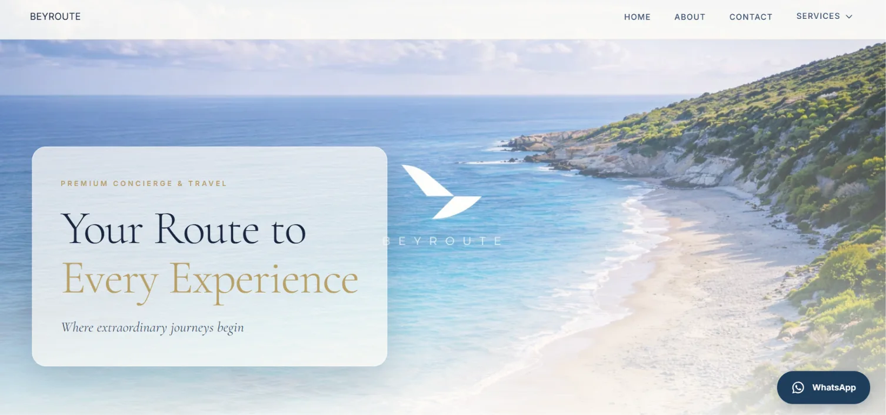
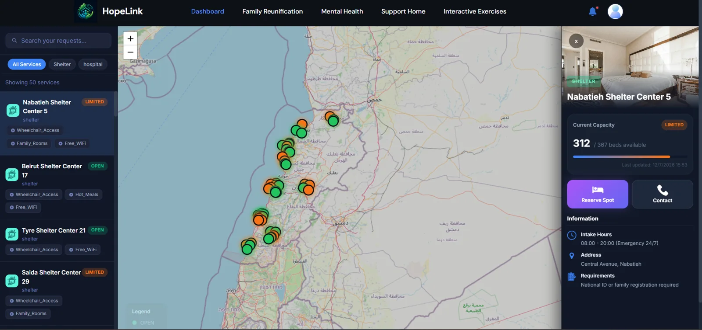
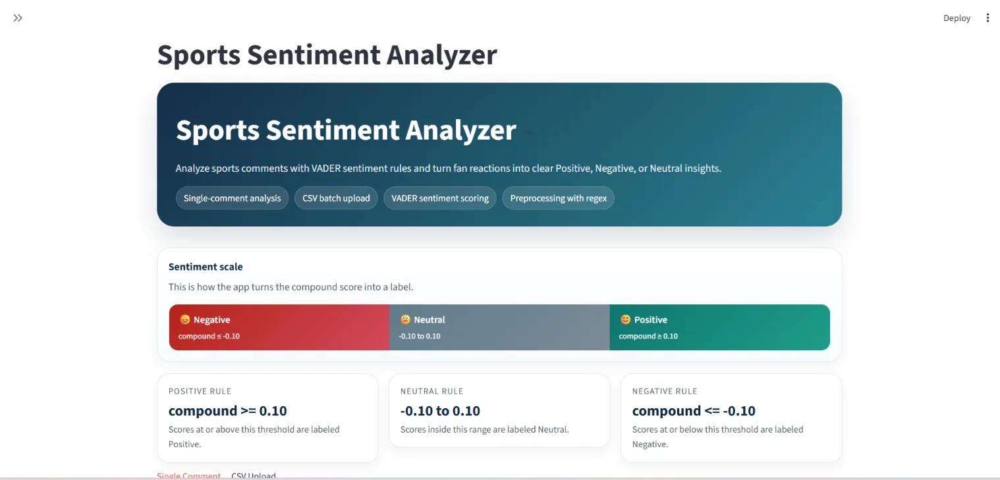

01 / PROFESSIONAL WORK
Beyroute Concierge
Developed and maintain a premium website for a real travel and concierge business. Focused on a refined, responsive interface, service discovery, and clear ways for clients to get in touch.
I'm Wissam Haouchar, a Computer Science graduate building thoughtful web experiences, full-stack applications, and practical NLP tools. From production websites to software that solves real problems.
Real applications, real interfaces, and working demos. Select a project to explore what I built.

Developed and maintain a premium website for a real travel and concierge business. Focused on a refined, responsive interface, service discovery, and clear ways for clients to get in touch.

A humanitarian support platform designed to connect people in need with aid resources. Features role-based experiences, shelter mapping, service requests, hospital directories, and NGO management tools.

A live NLP application that classifies sports comments as positive, neutral, or negative using VADER sentiment scoring. Supports individual analysis, quick examples, and batch processing from CSV files.
Responsive design and accessible, intuitive experiences across devices.
Building connected applications with APIs, databases, and practical workflows.
Exploring NLP, data-driven applications, and new technologies through hands-on projects.
I'm a Computer Science graduate from Lebanese International University. I enjoy turning complex ideas into software people can actually use, whether that's a polished business website, a full-stack platform, or a Python application.
I care about the details, learn quickly, and like taking ownership of a project from the first sketch to the finished product.
Get in touchBuilt and maintain the company's website, including responsive UI and ongoing improvements.
Worked on modern web development, application architecture, and API-driven systems.
Foundation in software engineering, application development, and computing concepts.
I'm open to software engineering, frontend, and full-stack opportunities. If my work looks like a fit, I'd love to hear from you.